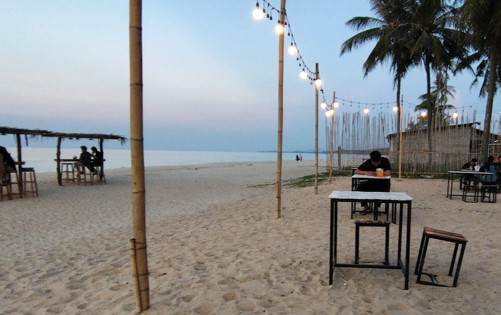
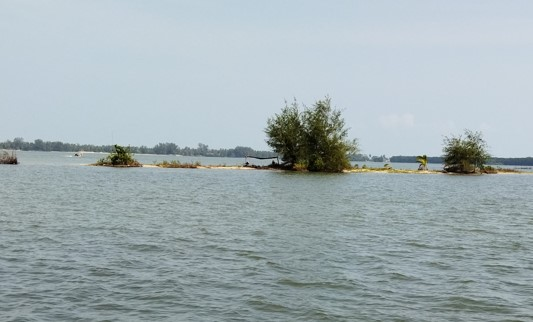

1 / 4

Caption One
2 / 4

Caption Two
3 / 4

Caption Three
4 / 4

Caption Four
video
Tourism in Pattani
One of the highlights of Pattani is its historical landmarks, including ancient mosques, Buddhist temples, and colonial-era buildings. The city of Pattani itself has a long and storied history, dating back to its days as a major trading port in the ancient Malay kingdom of Langkasuka. Travelers can explore sites such as the Krue Se Mosque, believed to be one of the oldest mosques in Thailand, or the Yaring Historic City, which offers insight into the region's past through its well-preserved architecture.